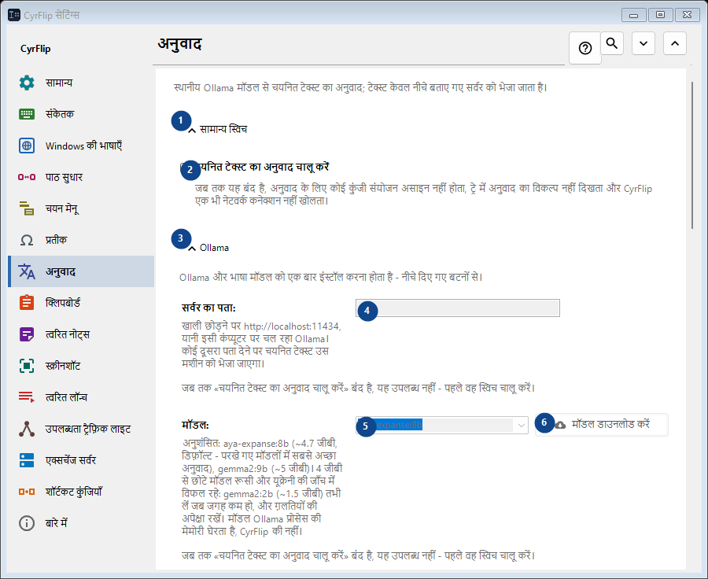
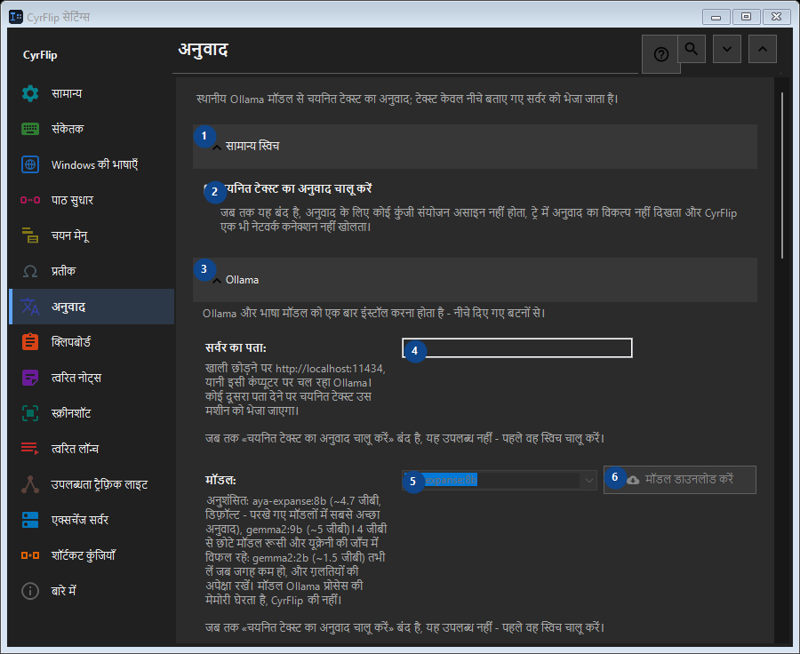

अनुवाद
इसका उपयोग
स्थानीय Ollama मॉडल से चयनित टेक्स्ट का अनुवाद; टेक्स्ट केवल नीचे बताए गए सर्वर को भेजा जाता है।


उपयोग का क्रम
सेटिंग तुरंत लागू होती हैं। कोई अनिवार्य क्रम नहीं है; नीचे दिए समूहों का उपयोग करें।
तत्व
1. सामान्य स्विच
बताई गई कार्रवाई के लिए इस आदेश का उपयोग करें। स्वीकार करने से पहले पुष्टि पढ़ें।
आपके शॉर्टकट2. चयनित टेक्स्ट का अनुवाद चालू करें
जब तक यह बंद है, अनुवाद के लिए कोई कुंजी संयोजन असाइन नहीं होता, ट्रे में अनुवाद का विकल्प नहीं दिखता और CyrFlip एक भी नेटवर्क कनेक्शन नहीं खोलता।
आपके शॉर्टकट3. Ollama
बताई गई कार्रवाई के लिए इस आदेश का उपयोग करें। स्वीकार करने से पहले पुष्टि पढ़ें।
आपके शॉर्टकट4. सर्वर का पता
जब तक «चयनित टेक्स्ट का अनुवाद चालू करें» बंद है, यह उपलब्ध नहीं - पहले वह स्विच चालू करें। यह तत्व अभी उपलब्ध नहीं है। पहले सुविधा चालू करें या कोई प्रविष्टि चुनें।
आपके शॉर्टकट5. मॉडल
जब तक «चयनित टेक्स्ट का अनुवाद चालू करें» बंद है, यह उपलब्ध नहीं - पहले वह स्विच चालू करें। यह तत्व अभी उपलब्ध नहीं है। पहले सुविधा चालू करें या कोई प्रविष्टि चुनें।
आपके शॉर्टकट6. मॉडल डाउनलोड करें - मॉडल
जब तक «चयनित टेक्स्ट का अनुवाद चालू करें» बंद है, यह उपलब्ध नहीं - पहले वह स्विच चालू करें। यह तत्व अभी उपलब्ध नहीं है। पहले सुविधा चालू करें या कोई प्रविष्टि चुनें।
आपके शॉर्टकट7. Ollama इंस्टॉल करें
जब तक «चयनित टेक्स्ट का अनुवाद चालू करें» बंद है, यह उपलब्ध नहीं - पहले वह स्विच चालू करें। यह तत्व अभी उपलब्ध नहीं है। पहले सुविधा चालू करें या कोई प्रविष्टि चुनें।
आपके शॉर्टकट8. Ollama शुरू करें
जब तक «चयनित टेक्स्ट का अनुवाद चालू करें» बंद है, यह उपलब्ध नहीं - पहले वह स्विच चालू करें। यह तत्व अभी उपलब्ध नहीं है। पहले सुविधा चालू करें या कोई प्रविष्टि चुनें।
आपके शॉर्टकट9. कनेक्शन जाँचें
जब तक «चयनित टेक्स्ट का अनुवाद चालू करें» बंद है, यह उपलब्ध नहीं - पहले वह स्विच चालू करें। यह तत्व अभी उपलब्ध नहीं है। पहले सुविधा चालू करें या कोई प्रविष्टि चुनें।
आपके शॉर्टकट10. रद्द करें
बताई गई कार्रवाई के लिए इस आदेश का उपयोग करें। स्वीकार करने से पहले पुष्टि पढ़ें। यह तत्व अभी उपलब्ध नहीं है। पहले सुविधा चालू करें या कोई प्रविष्टि चुनें।
आपके शॉर्टकट11. अनुवाद के समय Ollama अपने आप शुरू करें
जब तक «चयनित टेक्स्ट का अनुवाद चालू करें» बंद है, यह उपलब्ध नहीं - पहले वह स्विच चालू करें। यह तत्व अभी उपलब्ध नहीं है। पहले सुविधा चालू करें या कोई प्रविष्टि चुनें।
आपके शॉर्टकट12. मॉडल को मेमोरी में रखें (मिनट)
जब तक «चयनित टेक्स्ट का अनुवाद चालू करें» बंद है, यह उपलब्ध नहीं - पहले वह स्विच चालू करें। यह तत्व अभी उपलब्ध नहीं है। पहले सुविधा चालू करें या कोई प्रविष्टि चुनें।
आपके शॉर्टकट13. Ollama और भाषा मॉडल को एक बार इंस्टॉल करना होता है - नीचे दिए गए बटनों से।
पास के लेबल के अनुसार मान चुनें या दर्ज करें। आगे बढ़ने से पहले जाँचें। यह तत्व अभी उपलब्ध नहीं है। पहले सुविधा चालू करें या कोई प्रविष्टि चुनें।
आपके शॉर्टकट14. मॉडल लोड होने की अधिकतम प्रतीक्षा (से)
जब तक «चयनित टेक्स्ट का अनुवाद चालू करें» बंद है, यह उपलब्ध नहीं - पहले वह स्विच चालू करें। यह तत्व अभी उपलब्ध नहीं है। पहले सुविधा चालू करें या कोई प्रविष्टि चुनें।
आपके शॉर्टकट15. Ollama और भाषा मॉडल को एक बार इंस्टॉल करना होता है - नीचे दिए गए बटनों से।
पास के लेबल के अनुसार मान चुनें या दर्ज करें। आगे बढ़ने से पहले जाँचें। यह तत्व अभी उपलब्ध नहीं है। पहले सुविधा चालू करें या कोई प्रविष्टि चुनें।
आपके शॉर्टकट16. अनुवाद की दिशाएँ
बताई गई कार्रवाई के लिए इस आदेश का उपयोग करें। स्वीकार करने से पहले पुष्टि पढ़ें।
आपके शॉर्टकट17. दिशा जोड़ें...
जब तक «चयनित टेक्स्ट का अनुवाद चालू करें» बंद है, यह उपलब्ध नहीं - पहले वह स्विच चालू करें। यह तत्व अभी उपलब्ध नहीं है। पहले सुविधा चालू करें या कोई प्रविष्टि चुनें।
आपके शॉर्टकट18. परिणाम
बताई गई कार्रवाई के लिए इस आदेश का उपयोग करें। स्वीकार करने से पहले पुष्टि पढ़ें।
आपके शॉर्टकट19. अनुवाद को क्लिपबोर्ड पर रखें
जब तक «चयनित टेक्स्ट का अनुवाद चालू करें» बंद है, यह उपलब्ध नहीं - पहले वह स्विच चालू करें। यह तत्व अभी उपलब्ध नहीं है। पहले सुविधा चालू करें या कोई प्रविष्टि चुनें।
आपके शॉर्टकट20. अनुवाद को तुरंत चयनित टेक्स्ट की जगह चिपकाएँ
जब तक «चयनित टेक्स्ट का अनुवाद चालू करें» बंद है, यह उपलब्ध नहीं - पहले वह स्विच चालू करें। यह तत्व अभी उपलब्ध नहीं है। पहले सुविधा चालू करें या कोई प्रविष्टि चुनें।
आपके शॉर्टकट21. अनुवाद के साथ मूल टेक्स्ट भी दिखाएँ
जब तक «चयनित टेक्स्ट का अनुवाद चालू करें» बंद है, यह उपलब्ध नहीं - पहले वह स्विच चालू करें। यह तत्व अभी उपलब्ध नहीं है। पहले सुविधा चालू करें या कोई प्रविष्टि चुनें।
आपके शॉर्टकट22. विंडो इतनी देर बाद बंद करें (सेकंड)
जब तक «चयनित टेक्स्ट का अनुवाद चालू करें» बंद है, यह उपलब्ध नहीं - पहले वह स्विच चालू करें। यह तत्व अभी उपलब्ध नहीं है। पहले सुविधा चालू करें या कोई प्रविष्टि चुनें।
आपके शॉर्टकट23. जब तक «चयनित टेक्स्ट का अनुवाद चालू करें» बंद है, यह उपलब्ध नहीं - पहले वह स्विच चालू करें।
पास के लेबल के अनुसार मान चुनें या दर्ज करें। आगे बढ़ने से पहले जाँचें। यह तत्व अभी उपलब्ध नहीं है। पहले सुविधा चालू करें या कोई प्रविष्टि चुनें।
आपके शॉर्टकट